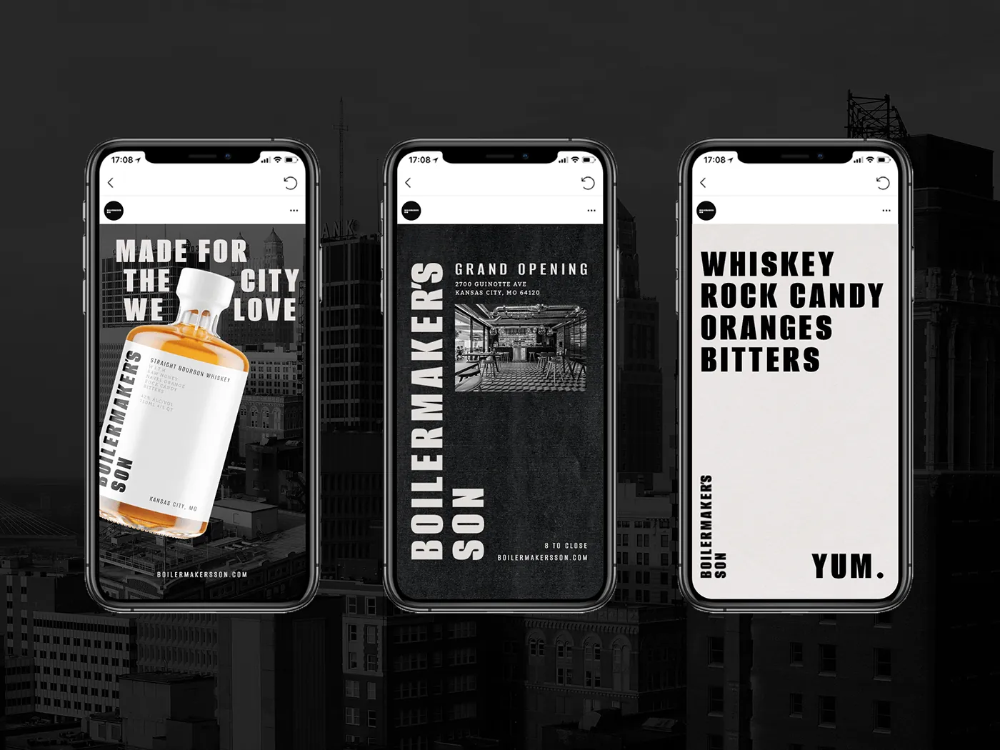
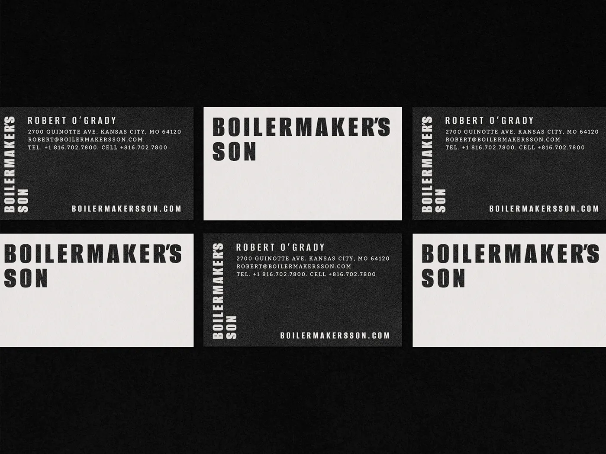
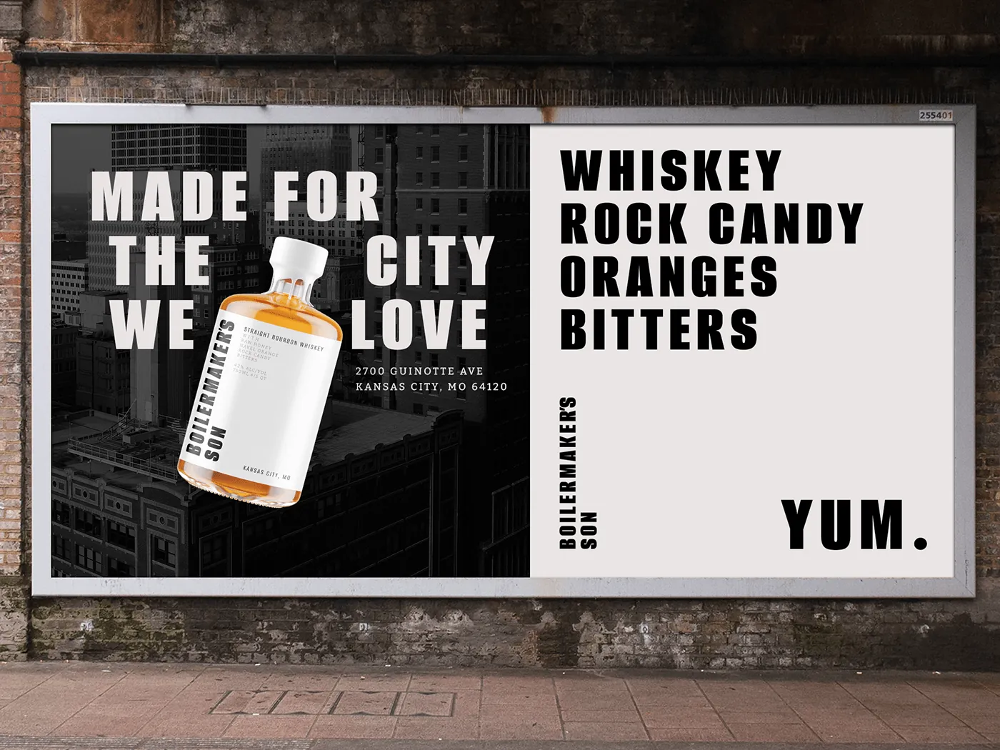
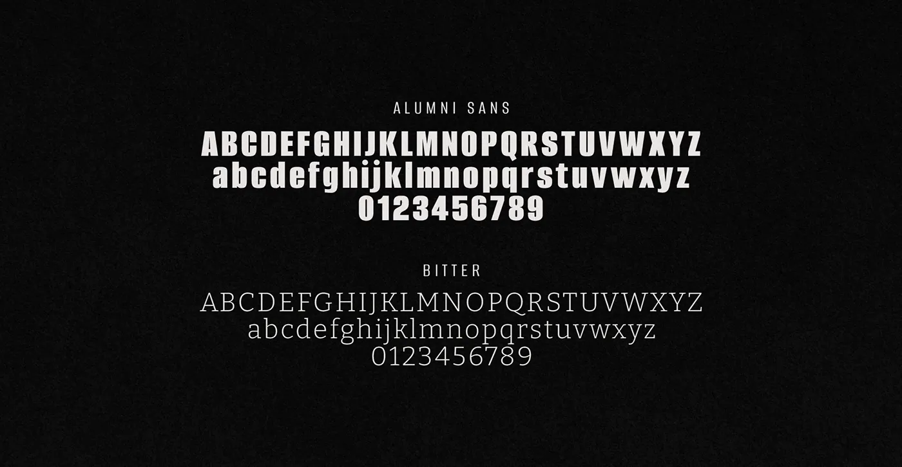

Jordan Darby Design
Jordan Darby DesignBoilermaker's Son
Minimally bold branding inspired by letterpress typography.
Boilermaker's Son is a brand I created from scratch — premise, positioning, name, and design — to explore a real category problem. A self-initiated concept, not a client engagement.

The Premise
Boilermaker’s Son is a brand I invented — a bottled cocktail from Kansas City made with rock candy, Florida navel oranges, raw honey, and aged bourbon. I built it around the generation of blue-collar workers who built the city: hard, honest work, and celebrating a job well done.
The Challenge
Premium drinks branding tends toward one of two failures — snobbery or gimmickry. The brief I set was a modern identity inspired by the past that could signal genuine quality and craftsmanship without either.
The Approach
The branding pays homage to the past by taking cues from vintage letterpress composition. The result is deliberately restrained: a decisive palette and a small number of graphic elements, reflecting the purity of the ingredients and the “no gimmicks” idea at the center of the brand. A distinct typographic system carries across every asset so the brand stays consistent wherever it shows up.
“I set out to capture the essence of blue-collar grit with an identity that’s eye-catching and cool.”


“Rejecting the snobbery that often surrounds premium drinks brands, the brand embodies the concept of ‘humble quality’.”


The Result
The identity lands on what I’d call humble quality — a premium drink that reads as earned rather than exclusive, positioned around hard work, craftsmanship, and celebrations worth having.
Working with Jordan was a privilege and a lot of fun. He is a very hard worker and a man of great talent. He’s a man of his word and will never let you down.

Jake Houser
Engineer while I was at Dare Devil Display WorksWant this kind of thinking on your brand?
Tell me about your brand or packaging challenge — I’ll come back with ideas and clear next steps.
Free, no-pressure consult · Same-day reply to most inquiries
✉ Start a Project